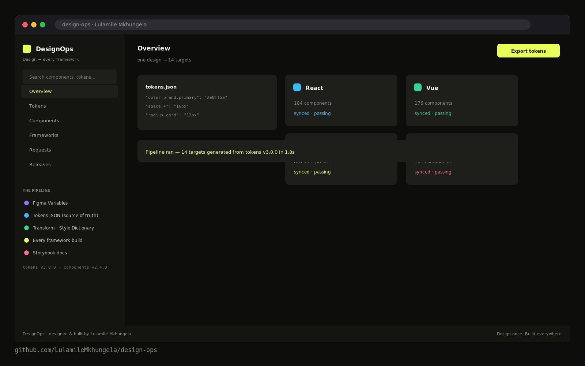
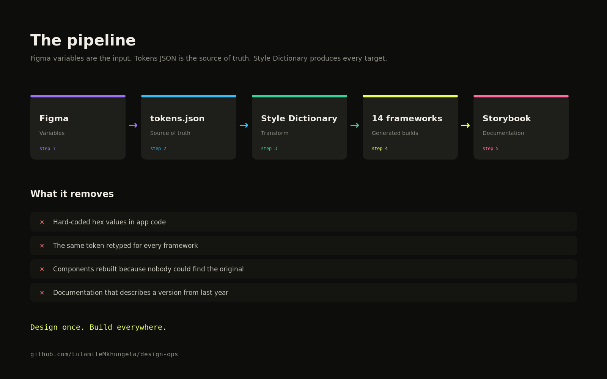

The problem
Design handoffs that break at build.
The gap between a Figma file and a production codebase is where most design intent dies. Colours drift. Spacing becomes inconsistent. Buttons have five variations when there should be two. The designer moves on to the next project and the system quietly diverges.
DesignOps was built to close that gap — a design system where the design tokens in Figma are the same tokens in the CSS, and the component documentation is written for the engineer who will use it at 11pm on a deadline, not the design director reviewing it in a presentation.
The pipeline
Every component travels all five stages.
DesignOps is not a file — it's a pipeline. One design in Figma enters at the top and exits as fourteen framework builds plus living documentation, mechanically, every time tokens or components change. No re-typing, no interpretation, no drift.
Figma Variables
Tokens and auto-layout live in Figma as variables. Colour, spacing, radius and type are defined once — the designer's screen is the pipeline's input, so a token change updates every component in one step.
Tokens JSON
The versioned source of truth. 41 tokens in the pipeline, rebuilt to dist/ on every release — tokens v3.0.0 today. Semver, diffs and rollbacks work because the tokens are code, not a spreadsheet.
Transform
A Style Dictionary build turns the JSON into per-target output. The pipeline adapts per framework — e.g. StyleSheet on mobile — so one schema generates every target with byte-identical intent.
Framework build
Fourteen targets at once: React, Vue, Angular, Svelte, Next, Nuxt, Remix, Astro, Ionic, MUI, Tailwind, React Native and beyond. A Button release ships to every framework in the same run.
Storybook
Living documentation, generated with the builds. What it is, when to use it, when not to, prop table, code example — written for the developer who will use it at 11pm on a deadline.
What's in the system
Tokens, components, fourteen builds.

41 tokens in the pipeline
Colour, spacing, typography, border-radius, shadow and motion — defined in Figma variables, shipped as a versioned tokens JSON (v3.0.0) and rebuilt to dist/ on every release.
8 components tracked
Button, Card, Data Table, Badge and the core set — every component travels all five pipeline stages, with design attached to the request: ask → design → ship.
14 framework targets
React, Vue, Angular, Svelte, Next, Nuxt, Remix, Astro, Ionic, MUI, Tailwind, React Native and beyond — one schema generates every framework, byte-identical intent.
Three gateways in
Install the packages for your stack, let the CLI wire everything automatically, or drop one CDN link for prototypes and legacy builds.
Quick start — pick your gateway
# 1 · install the packages for your stack
npm i @designops/tokens @designops/react # or vue / angular / svelte / mui …
# 2 · or let the CLI wire everything automatically
npx designops init # detects your framework, imports tokens, done
# 3 · prototypes / legacy: one CDN link
<link rel="stylesheet" href="https://cdn.designops.dev/tokens@3/tokens.css">Outcomes
One design, zero drift.
The numbers the pipeline publishes on every run — design-vs-dev misalignment is a category of problem that no longer exists on this system.
And the pipeline stays honest: the activity feed shows real runs — Button v2.1.0 shipped to all 14 targets, tokens v3.0.0 rebuilt, Card stories PR opened, Badge warning token corrected. A system you can audit, not just admire.